▲ 운해가 낀 지산동 고분군 능선. 촬영 시기는 자료에 없다 ⓒ 한국관광공사 · 공공누리 제1유형
"가야고분군은 일곱 곳이라던데, 고령에서는 어디를 가야 하고 박물관은 몇 시까지 열지?" 이 글은 2026년 10월 19일 기준으로 고령군 대가야박물관 누리집과 한국관광공사 자료로 지산동 고분군, 대가야박물관, 우륵박물관, 대가야역사테마관광지·생활촌의 운영 정보를 정리했다. 결론부터 말하면 세계유산에 오른 곳은 지산동 고분군이고, 박물관과 테마관광지는 세계유산 구성 요소가 아니라 그 곁에서 이야기를 풀어 주는 시설이다. 대가야박물관 관람안내 바로가기
이 글을 쓰는 10월 19일은 월요일이다. 대가야박물관 정기 휴관일이 바로 월요일이라, 박물관만 보려고 월요일에 가면 문이 닫혀 있다. 반대로 지산동 고분군은 상시 개방이라 월요일에도 들어갈 수 있다. 요일에 따라 동선이 달라지는 곳이다.
💡 먼저 결론
가야고분군은 2023년 세계유산에 오른 7개 고분군이고 고령은 지산동 고분군 한 곳이다. 대가야박물관은 무료이며 3~10월 09:00~18:00(입장마감 17:00), 11~2월 09:00~17:00(입장마감 16:00), 매주 월요일 휴관이다. 지산동 고분군은 한국관광공사 정보상 상시 개방·연중무휴다. 대가야생활촌과 테마관광지의 현행 요금은 공식 자료에서 확인하지 못했다.
1. 먼저 바로잡기 — 세계유산은 어디까지가 "고령 대가야"인가
유네스코 세계유산센터의 가야고분군(Gaya Tumuli) 소개는 이 유산을 일곱 개 고분군으로 이루어진 연속유산으로 설명하고, 2023년 제45차 세계유산위원회에서 등재 기준 (iii)으로 올랐다고 밝힌다. 구성 고분군은 대성동, 말이산, 옥전, 지산동, 송학동, 유곡리·두락리, 교동과 송현동이다. 언론은 위원회의 결정일을 2023년 9월 17일(현지)로 전했다. 국가유산청 영문 누리집도 같은 7개 고분군 구성을 소개한다.
| 고분군 | 소재지 | 관련 기사 |
|---|---|---|
| 대성동 고분군 | 경남 김해 | 김해 가야 유적 걷기 기사 |
| 말이산 고분군 | 경남 함안 | — |
| 옥전 고분군 | 경남 합천 | — |
| 지산동 고분군 | 경북 고령 | 이 기사 |
| 송학동 고분군 | 경남 고성 | — |
| 유곡리·두락리 고분군 | 전북 남원 | — |
| 교동·송현동 고분군 | 경남 창녕 | — |
고령과 김해를 같은 날 묶는 사람이 있는데, 두 곳은 같은 세계유산의 서로 다른 구성 요소일 뿐 한 곳에서 다 볼 수 있는 유산이 아니다. 김해 기사에서 다룬 대성동 고분군은 금관가야, 이 기사의 지산동 고분군은 대가야를 대표한다. UNESCO 지리 정보표에는 지산동 고분군 면적이 84.41ha(완충구역 256.44ha)로 올라 있으나, 일부 언론은 다른 면적 수치를 보도해 이 글에서는 UNESCO 표기를 따랐다.
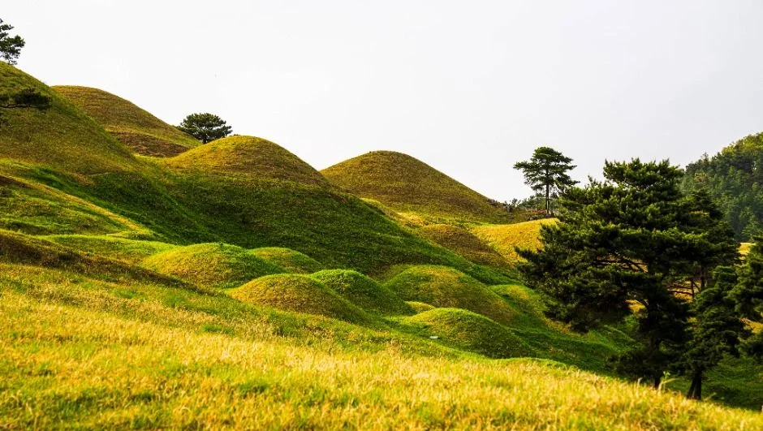
▲ 지산동 고분군의 봉분이 이어진 능선. 촬영 시기는 자료에 없다. ⓒ 한국관광공사 · 공공누리 제1유형
2. 지산동 고분군 — 상시 개방, 능선 위 길을 걷는 곳
한국관광공사 소개에 따르면 지산동 고분군은 1906년 처음 발굴조사된 이래 크고 작은 700여 기의 고분이 확인된 사적이다. 고분은 모두 원형 봉토분이고, 큰 무덤은 능선 위쪽에, 작은 무덤은 아래쪽에 모여 있다. 주로 4~6세기 대가야 지배층의 무덤으로 추정되며, 우리나라에서 처음 발굴된 순장묘 왕릉인 44호와 45호분이 여기에 있다. 소재지는 고령군 대가야읍 지산리, 관광공사 이용 정보는 상시 개방·연중무휴·주차 가능이다. 문의는 고령군청 문화유산과(054-950-6323)다.
| 항목 | 내용 | 근거 |
|---|---|---|
| 개방 | 상시 개방, 연중무휴 | 한국관광공사 |
| 요금 | 입장료 표기를 공식 자료에서 확인하지 못함 | — |
| 주차 | 가능(대수는 확인하지 못함) | 한국관광공사 |
| 규모 | 700여 기 확인, 4~6세기 대가야 지배층 무덤으로 추정 | 한국관광공사 |
| 문의 | 고령군청 문화유산과 054-950-6323 | 한국관광공사 |
| 걷기 거리·소요시간 | 공식 수치를 확인하지 못함 | — |
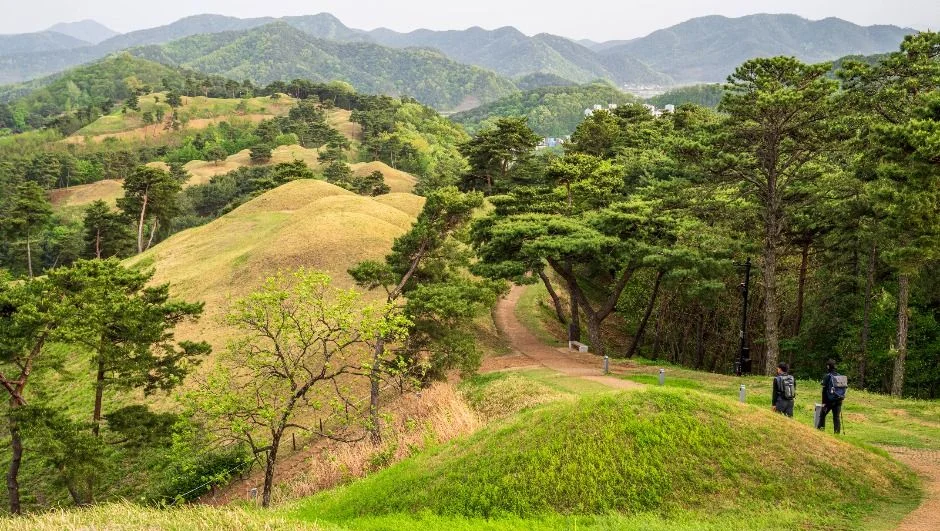
▲ 봉분 사이로 흙길이 이어지는 구간. 촬영 시기는 자료에 없다. ⓒ 한국관광공사 · 공공누리 제1유형
걷기 코스의 거리와 시간은 공식 수치를 찾지 못해 적지 않는다. 한국관광공사의 지산동 고분군 사진에는 소나무 아래 그네와 흙길, 봉분이 이어진 능선이 담겨 있어 완만한 능선길이라는 인상은 받지만, 경사도와 계단 구간은 현장 안내를 따르자. 같은 능선 위에는 대가야 때 쌓은 주산성(고령 주산성)이 있고, 한국관광공사에는 숲속 흙길과 나무 계단 사진이 올라 있다.
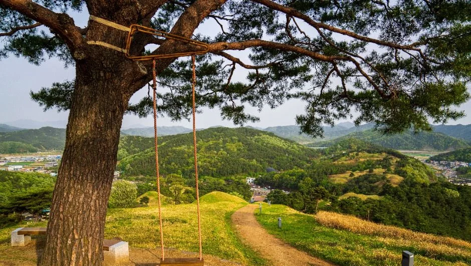
▲ 소나무 그네가 놓인 전망 지점. 정확한 위치는 사진 설명에 없다. ⓒ 한국관광공사 · 공공누리 제1유형
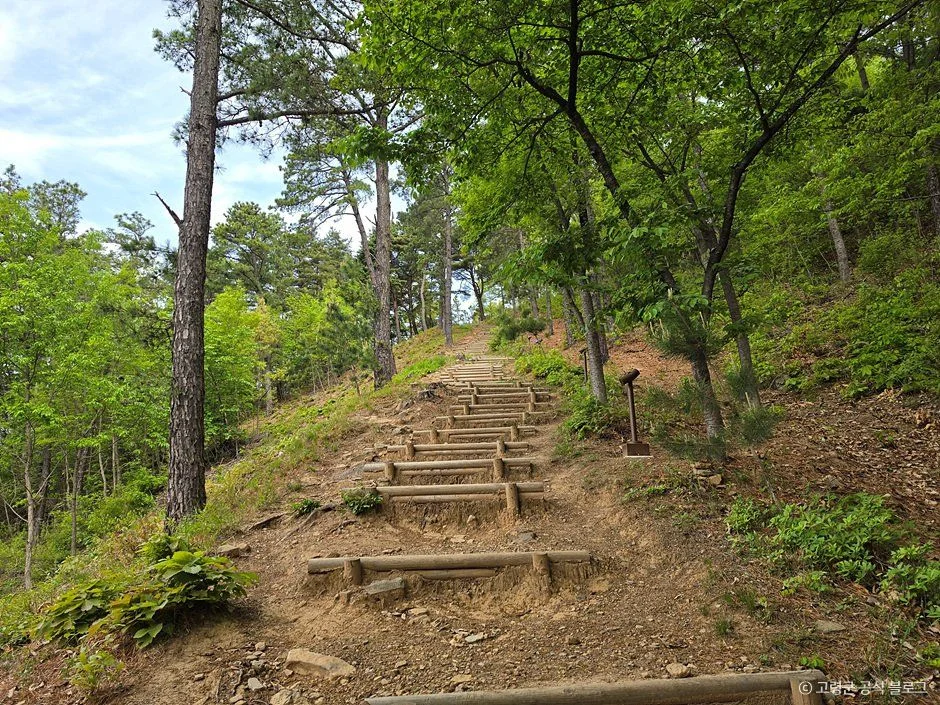
▲ 주산성 탐방로의 나무 계단 구간. 촬영 시기는 자료에 없다. ⓒ 한국관광공사 · 공공누리 제3유형(변경금지)
3. 대가야박물관 — 월요일 휴관, 동절기는 17시까지
대가야박물관은 대가야왕릉전시관, 대가야역사관, 어린이체험학습관으로 구성된다. 공식 안내에 따르면 지산동 44호분 내부를 원래 모습으로 재현한 왕릉전시관에서 순장 문화를 볼 수 있고, 역사관은 구석기시대부터 근대까지 고령의 역사를 전시한다. 고령군 대가야박물관 공식 안내 바로가기
| 항목 | 내용 |
|---|---|
| 전시관 하절기(3~10월) | 09:00~18:00, 입장마감 17:00 |
| 전시관 동절기(11~2월) | 09:00~17:00, 입장마감 16:00 |
| 휴관일 | 매주 월요일(월요일이 공휴일이면 공휴일 다음의 첫 평일) |
| 관람요금 | 무료 |
| 어린이체험학습관 | 3~10월 09:30~17:00(입장마감 16:40), 11~2월 09:30~16:30(입장마감 16:10), 점심 12:00~13:00 |
| 주소·전화 | 대가야읍 대가야로 1203, 054-950-7103 |
| 주차 | 공식 관람안내 페이지에서 확인하지 못함(한국관광공사 정보에도 빈칸) |
관람료는 2024년 2월 22일부터 무료로 바뀌었다고 언론이 보도했고, 현재 공식 관람안내에도 "관람요금은 무료입니다"로 적혀 있다. 11월 1일부터 동절기라 마감이 한 시간 빨라지는 점이 가장 흔한 실수 지점이다.
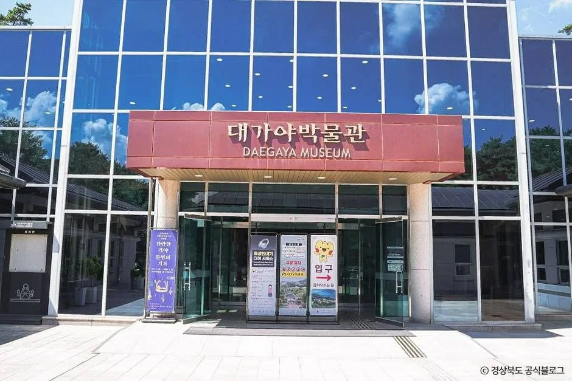
▲ 대가야박물관 입구. 촬영 시기는 자료에 없다. ⓒ 한국관광공사 · 공공누리 제3유형(변경금지)
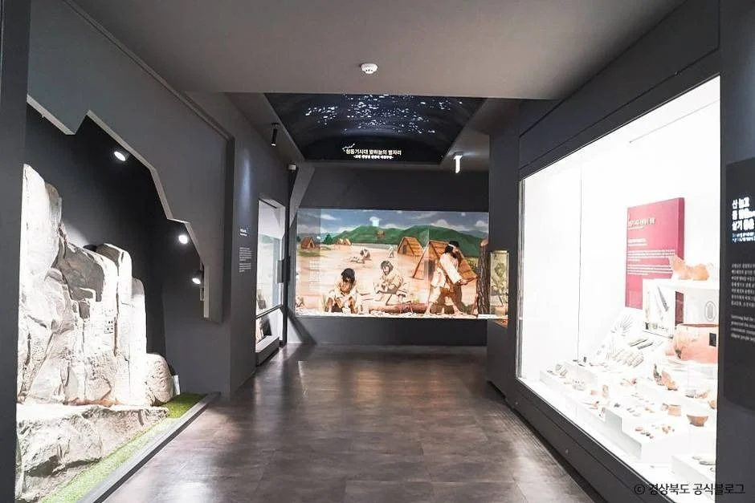
▲ 대가야박물관 상설전시실. 사진 속 전시는 현재와 다를 수 있다. ⓒ 한국관광공사 · 공공누리 제3유형(변경금지)
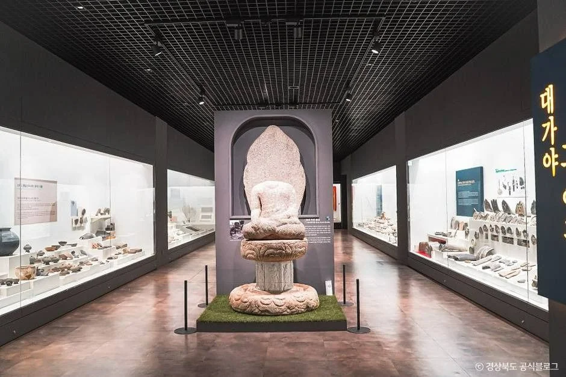
▲ 불상과 토기가 진열된 전시 공간. 전시 구성은 방문 전 확인. ⓒ 한국관광공사 · 공공누리 제3유형(변경금지)
4. 우륵박물관·가야금 — 시간표가 박물관과 미세하게 다르다
우륵박물관은 가야금을 만든 우륵과 관련한 자료를 전시한 전국 유일의 우륵·가야금 테마 박물관이라고 공식 안내가 설명한다. 같은 곳의 소리체험관은 세계의 악기와 일상 속 소리를 체험하는 공간이다. 주소는 대가야읍 가야금길 98, 전화는 054-950-7136이다. 고령군 공식 안내의 입장요금표는 소리체험관 항목에 걸려 있어, 우륵박물관 전시 자체의 요금은 공식 안내에서 별도로 확인하지 못했다.
| 항목 | 내용 |
|---|---|
| 하절기(3~10월) | 09:00~18:00, 입장마감 17:30 |
| 동절기(11~2월) | 09:00~17:00, 입장마감 16:30 |
| 휴관 | 매주 월요일(월요일이 공휴일이면 정상 운영), 1월 1일, 설·추석 당일 |
| 요금 | 우륵박물관 전시는 관광공사 정보상 무료. 단 같은 곳의 소리체험관은 고령군 공식 안내상 유료 |
| 소리체험관 입장요금(고령군 공식 안내) | 성인(만 19~64세) 5,000원, 학생·미취학아동(만 36개월~18세) 4,000원, 고령군민·영유아·65세 이상 무료. 입장권 구입 시 지역상품권 3,000원 현장 환급 |
| 고령군 공식 안내와 차이 | 고령군 공식 안내는 대가야박물관과 같은 월요일 휴관(공휴일이면 다음 평일), 입장마감 1시간 전을 적는다. 두 자료가 달라 방문 전 전화 확인을 권한다 |
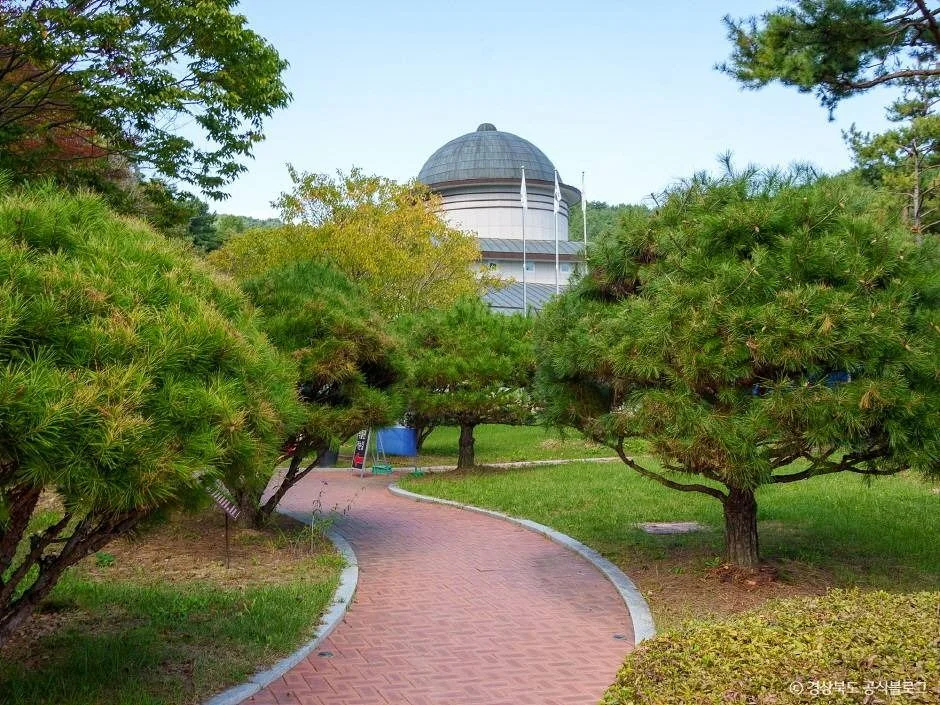
▲ 우륵박물관 일대의 정원. 촬영 시기는 자료에 없다. ⓒ 한국관광공사 · 공공누리 제3유형(변경금지)
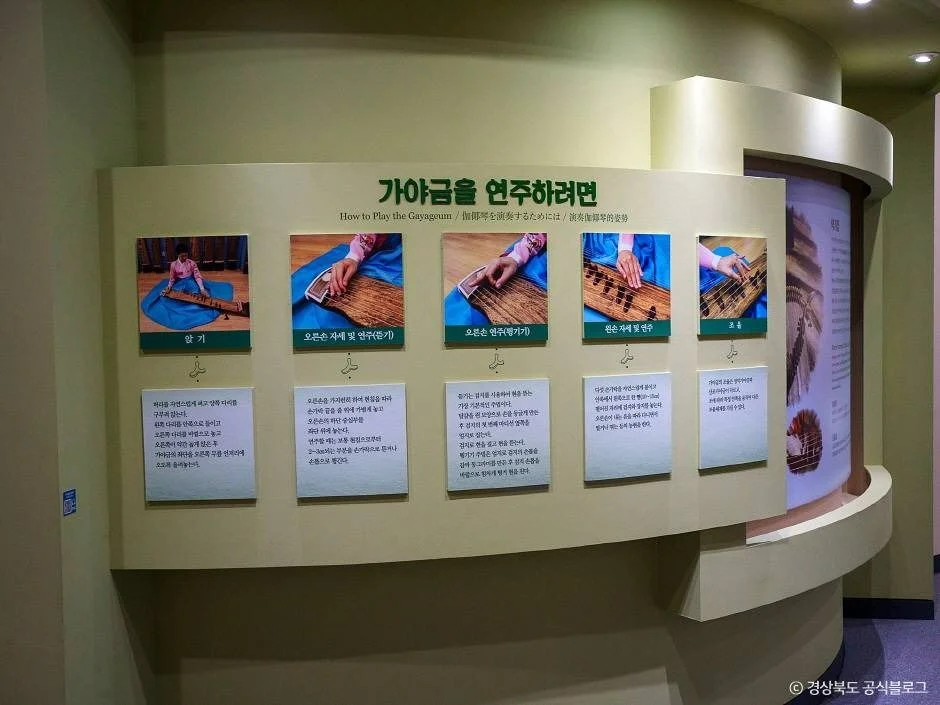
▲ 가야금 관련 전시 패널. 현재 전시와 다를 수 있다. ⓒ 한국관광공사 · 공공누리 제3유형(변경금지)
5. 대가야역사테마관광지·생활촌 — 확인된 것과 확인하지 못한 것
한국관광공사는 대가야역사테마관광지를 영상관, 유물과 체험관, 탐방 숲길을 갖춘 관광지로 소개하고, 이용시간 09:00~18:00, 휴무 매주 월요일, 문의 054-950-7005로 적는다. 이곳은 대가야축제가 열리는 장소이기도 하다. 대가야생활촌은 관광공사 정보상 하절기 09:00~18:00, 동절기 09:00~17:00, 월요일 휴장(공휴일이면 다음 날), 주차 198대 가능, 문의 054-950-7180이다.
| 시설 | 확인한 내용 | 확인하지 못한 것 |
|---|---|---|
| 대가야역사테마관광지 | 09:00~18:00, 월요일 휴무, 주차 가능 | 시설별 요금, 동절기 시간 |
| 대가야생활촌 | 하절기 09:00~18:00 / 동절기 09:00~17:00, 월요일 휴장, 주차 198대 | 현행 입장료(2019년 개장 당시 요금은 언론에 있으나 현재와 같은지 알 수 없음) |
| 대가야 야간경관 | 언론은 역사테마관광지 야간 경관을 무료로 볼 수 있다고 보도 | 점등 시각 |
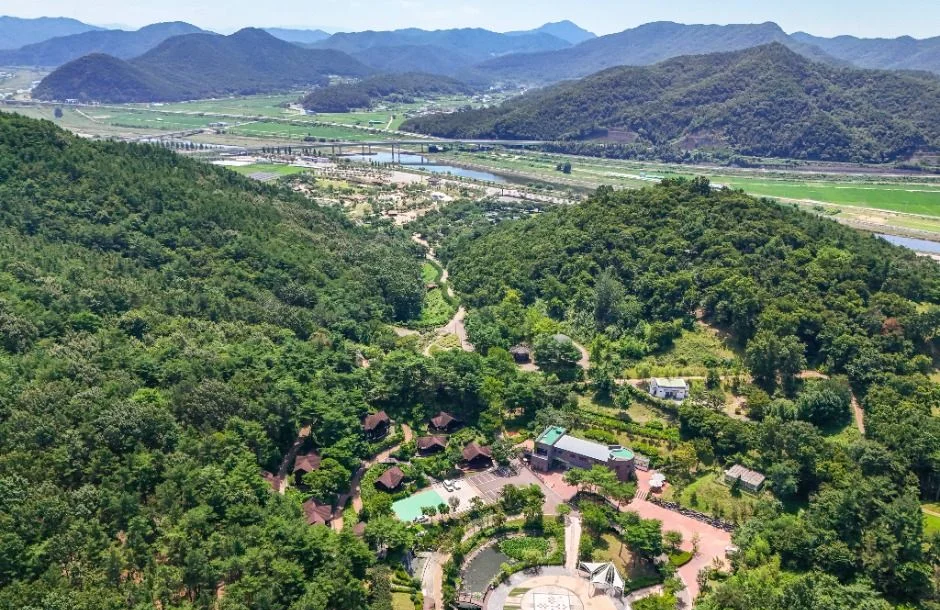
▲ 대가야역사테마관광지 일대를 내려다본 장면. 촬영 시기는 자료에 없다. ⓒ 한국관광공사 · 공공누리 제1유형
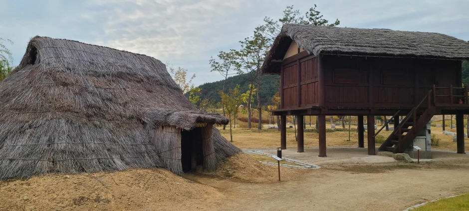
▲ 대가야생활촌의 복원 가옥과 창고. 촬영 시기는 자료에 없다. ⓒ 한국관광공사 · 공공누리 제3유형(변경금지)
2026년 대가야축제는 한국관광공사 행사 정보에 3월 27일부터 29일까지로 올라 있어 이미 끝났다. 다음 축제 일정은 확인하지 못했다.
6. 겨울에 가면 — 실내와 야외를 나눠 짜는 법
공식 운영시간이 동절기에 짧아지므로, 실내 시설을 해가 있는 시간에 몰고 야외를 나머지에 두는 편이 안전하다. 기온·적설·결빙 같은 기상 정보는 공식 자료에서 확인하지 못해 적지 않는다.
| 구분 | 시설 | 동절기 운영 정보 |
|---|---|---|
| 실내 | 대가야박물관 전시관 | 09:00~17:00, 입장마감 16:00, 월요일 휴관 |
| 실내 | 우륵박물관 | 09:00~17:00, 입장마감 16:30(관광공사 기준) |
| 실외 | 지산동 고분군 | 상시 개방(관광공사), 야간 조명 개방은 확인 못함 |
| 실외 | 대가야생활촌 | 09:00~17:00, 월요일 휴장(관광공사) |
고분군 능선길은 흙길이라 해빙기나 눈 쌓인 날에는 미끄러울 수 있다. 이는 일반적인 주의일 뿐 이 코스의 통제 기준은 확인하지 못했다.
7. 관람 순서 — 어느 쪽을 먼저 가야 하나
세계유산을 제대로 이해하려면 무덤을 보기 전에 무엇이 묻혔는지 알고 가는 편이 낫다. 박물관 왕릉전시관이 44호분 내부를 재현해 두었으니 실내에서 고분군 순서가 자연스럽다. 아래는 공식 운영시간만을 근거로 짠 예시이며, 코스별 소요시간은 공식 수치가 없어 적지 않았다.
| 순서 | 장소 | 제약 |
|---|---|---|
| 1 | 대가야박물관(왕릉전시관, 역사관) | 월요일 휴관, 동절기 입장마감 16:00 |
| 2 | 우륵박물관 | 입장마감 시각이 자료마다 다름, 전화 확인 |
| 3 | 지산동 고분군(능선 산책) | 상시 개방, 해가 지기 전에 마무리 권장 |
| 선택 | 대가야생활촌·역사테마관광지 | 월요일 휴장, 요금 확인 필요 |
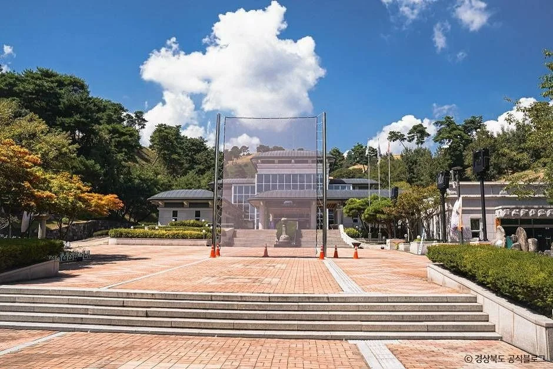
▲ 대가야박물관 앞 광장. 촬영 시기는 자료에 없다. ⓒ 한국관광공사 · 공공누리 제3유형(변경금지)
월요일에 가야 한다면 박물관·우륵박물관·생활촌이 모두 쉬는 날이라 지산동 고분군 산책이 중심이 된다. 같은 가야 유적을 이어서 보고 싶다면 김해 가야 유적 걷기 기사, 인근 합천의 해인사·가야산 기사, 대구 달성의 도동서원 기사와 함께 일정을 짜 볼 수 있다. 각 기사의 운영 정보는 해당 기사 기준이다.
8. 주소·주차·문의 한눈에
| 시설 | 주소 | 전화 |
|---|---|---|
| 대가야박물관 | 대가야읍 대가야로 1203 | 054-950-7103 |
| 우륵박물관 | 대가야읍 가야금길 98 | 054-950-7136 |
| 대가야역사테마관광지 | 대가야읍 대가야로 1216 | 054-950-7005 |
| 대가야생활촌 | 대가야읍 신남로 81 | 054-950-7180 |
| 지산동 고분군 | 대가야읍 지산리 | 054-950-6323(문화유산과) |
주차는 생활촌 198대, 지산동 고분군 "가능"만 공식 정보로 확인했고, 박물관·우륵박물관 주차 대수와 대중교통은 확인하지 못했다. 고분군 입구의 정확한 주차 위치는 현장 안내를 따르자.
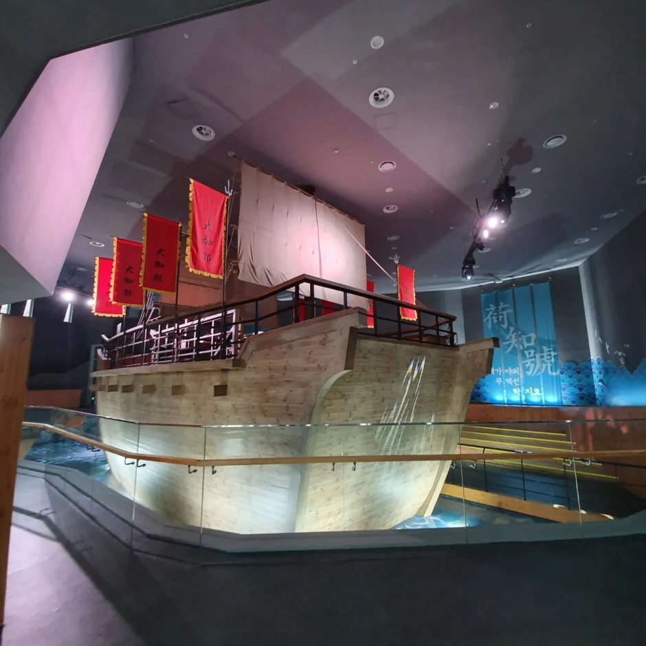
▲ 대가야생활촌 사진 묶음에 포함된 전시 장면(배 모형). 정확한 전시관 이름은 자료에 없다. ⓒ 한국관광공사 · 공공누리 제3유형(변경금지)
✅ 출발 전 체크
1) 월요일은 박물관·우륵박물관 휴관(우륵은 공휴일 규정 확인), 고분군은 상시 개방 2) 11월 1일부터 박물관 09:00~17:00, 입장마감 16:00 3) 세계유산은 7개 고분군 중 지산동 한 곳 4) 생활촌·테마관광지 요금은 방문 전 전화 확인 5) 사진은 촬영 시기가 자료에 없고 겨울 풍경이 아니다.
9. 정리
지산동 고분군은 2023년 유네스코 세계유산에 오른 가야고분군 7곳 중 고령의 한 곳이고, 대가야박물관은 무료·월요일 휴관·11월부터 입장마감 16:00이다. 우륵박물관은 입장마감 안내가 자료마다 달라 전화 확인이 필요하다.
생활촌과 테마관광지의 현행 요금, 고분군 걷기 거리·소요시간, 박물관 주차 대수, 다음 축제 일정은 확인하지 못했다. 이 기사는 2026년 10월 19일 기준이다.